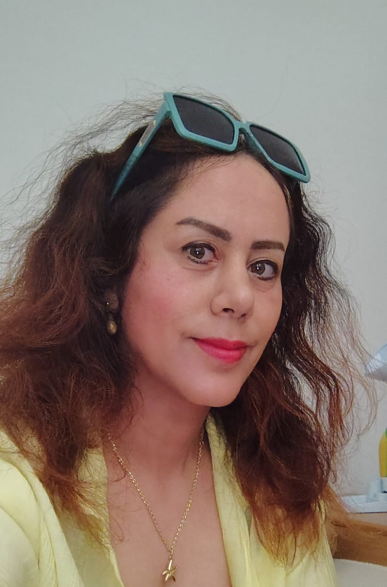

Computer Vision
Object detection, instance segmentation, and image-based crop analysis.
Researcher (PostDoc)
Plant Phenotyping | Deep Learning | Computer Vision | Machine Learning | UAS and Satellite Systems | Genetics
Advancing agricultural research through intelligent imaging and data-driven technologies.

My Story
My journey into science began with a simple aspiration: to make a meaningful difference in the lives of farmers in my hometown.
I began my academic journey with a Bachelor's degree in Rural Development and Management Engineering, , driven by a desire to understand and address the challenges facing my rural community. During an internship at a local agricultural machinery center, I discovered a growing fascination with agricultural machinery design. Seeing the difficulties farmers faced, particularly during harvesting, inspired me to imagine machines and tools that could reduce their physical burden and make agricultural work more efficient.
This curiosity led me to pursue a Master's degree in Biosystems Engineering at Khuzestan University of Agricultural Sciences and Natural Resources, Iran , where I worked on the design of air-assisted nozzles for boom sprayers using SolidWorks. It was an opportunity to turn practical agricultural challenges into engineering solutions.
Over time, however, my curiosity expanded beyond machinery. I became increasingly interested in how biology, data science, and emerging technologies could come together to transform agricultural research. This ambition brought me to Italy, where I pursued a PhD in Industry 4.0 at Politecnico di Bari, Italy. I completed my doctoral research in October 2024 and successfully defended my dissertation in January 2025.
Today, I am a Postdoctoral Researcher at CREA – Research Centre for Cereal and Industrial Crops, Italy , where I continue exploring the intersection of artificial intelligence, computer vision, deep learning, and plant phenotyping.
Throughout my research journey, I have worked with crops including tomatoes, strawberries, barley, and wheat, applying image classification, object detection, and instance segmentation techniques. My work includes developing and adapting YOLO-based models for agricultural applications, as well as exploring multimodal learning approaches that integrate genomic, near-field imaging, UAV, and environmental data to better understand and predict plant traits.
What connects these different stages of my career is a continuing desire to turn curiosity into knowledge, and knowledge into solutions that matter.
Science is an important part of who I am, but my curiosity extends far beyond the laboratory.
I have always been fascinated by the deeper questions of human existence: Why are we here? What does it mean to truly know ourselves? And how do our experiences shape our understanding of life?
Psychology, philosophy, self-discovery, and reflections on near-death experiences are among the subjects that continually inspire my thinking.
Nature has a special place in my life. Hiking and spending time in the mountains remind me what it feels like to be truly alive. Gentle music, physical exercise, and quiet moments help me begin each day with a clearer mind and renewed energy. Meditation is particularly meaningful to me; in stillness, I find a way to listen more deeply to myself and to the world around me.
True freedom begins when we find the courage to break the invisible chains of fear, attachment to material possessions and people, and societal expectations; when we choose to live authentically and courageously, rather than seek refuge in the illusion of security offered by familiar habits and worldly attachments.
There is one saying that has always brought me a profound sense of peace:“Die before you die.”
For me, these words are not about physical death, but about letting go of fear, ego, and the identities that prevent us from living authentically. They are a reminder that growth often begins when we find the courage to release what no longer serves us.
I believe that life, much like science, is an ongoing journey of questioning, discovering, transforming, and becoming.
Areas of Expertise
Object detection, instance segmentation, and image-based crop analysis.
High-throughput phenotyping and quantitative crop trait estimation.
Integration of UAV imagery, near-field imaging, and genomic information.
Selected Work
Deep learning for wheat spike detection, segmentation, and grain yield estimation.
Combining UAV time-series, ground imagery, and SNP markers for crop trait prediction.
Scientific Output
Smart Agricultural Technology, 102370. Development and validation of a YOLOv11-based image-analysis framework integrating segmentation and quantitative downstream analysis.
View Publication ↗Journal of Experimental Botany, 2026, erag371.
View Publication ↗PhD Thesis | Politecnico di Bari, Italy.
Doctoral research on high-throughput plant phenotyping using computer vision and artificial intelligence, including deep learning, YOLO-based object detection, data balancing, and model architecture optimization.
View PhD Thesis ↗Computers and Electronics in Agriculture, 218, 108728. Development and evaluation of modified YOLOv8 architectures for robust object detection under complex imaging conditions.
View Publication ↗IEEE CASE 2024. Evaluation and modification of deep-learning detector architectures for small-object detection.
View Publication ↗Information, 14(4), 214. Review of imaging hardware, computational methods, image-analysis pipelines, and automated phenotyping systems.
View Publication ↗Computers and Electronics in Agriculture, 207, 107757. Application and evaluation of YOLO-based single-stage detectors for automated image analysis.
View Publication ↗Pattern Recognition Letters. CNN-based probabilistic image identification using patch-level image analysis.
View Publication ↗CIGR Journal, 24(2).
Get in Touch
Consiglio per la ricerca in agricoltura e l’analisi dell’economia agraria (CREA), Centro di Ricerca Cerealicoltura e Colture Industriali (CREA-CI), S.S. 673 Metri 25200, Foggia, 71122, Italy